Central idea. Geothermal development on the Jamali grid is the intervention of interest. Before Indonesia can consider using marginal emission factors (MEFs) to assess that intervention against combined-margin (CM) accounting, what data, variables and modelling methods would be needed to estimate the emissions effects credibly?
Research question. What data and modelling approaches would be needed to estimate the short- and long-run marginal emissions effects of geothermal development in Jamali, and how could these inform assessment of the combined-margin (CM) approach?
Scope. A defensible pathway towards estimating those geothermal-related effects for Jamali: why geothermal matters for displacement, suitable methods, necessary variables, available evidence, remaining gaps, a credibility protocol for judging a future estimate against CM, and recommendations for enabling future implementation.
Carbon credits. Carbon crediting is the policy context for assessing CM (geothermal projects may seek credits that currently rely on published CM-type factors). This study does not determine credit eligibility or issue factors for use in crediting. Accounting compliance, operational MEF estimation and credit issuance are distinct questions.
This study is organised around a concrete policy and project question: if geothermal capacity is developed on the interconnected Jawa–Madura–Bali (Jamali) system, what happens to grid emissions, and is the published combined-margin (CM) factor a good enough description of that effect for accounting and carbon-credit assessment? Methods, data audits and readiness checks exist to support that question; they are not a general-purpose modelling exercise detached from geothermal.
Geothermal plants typically provide relatively steady output and are often treated as near must-run or high-priority resources in dispatch. Adding geothermal therefore usually means injecting additional low-carbon megawatt-hours into the system, which forces other resources—often fossil units—to reduce generation when the system can absorb the energy. The emissions benefit is not “geothermal is clean” in isolation; it is the avoided emissions from whatever is displaced. That displacement can differ by hour (for example, coal more often at night and gas more often at peak in a stylised merit-order illustration using Nusantara Power heat rates and assumed prices). Those illustrations show the logic; they are not a calibrated Jamali geothermal impact.
In the short run, the fleet is treated as fixed. Extra geothermal output changes which existing plants sit on the margin hour by hour (and possibly by location if transmission binds). A short-run MEF aims to estimate that operational response: the change in system CO₂ per incremental megawatt-hour of the stated perturbation (demand change or geothermal injection), with capacity held fixed. Demand shocks and geothermal injection are related but not automatically interchangeable without a boundary and operating justification. Historical regression on interval demand, generation and constructed emissions is the recommended first pilot once UIP2B-class data are available; it still does not by itself prove the lifetime effect of a named geothermal project.
Geothermal projects run for many years. Over that horizon, additional geothermal can also change investment and retirement decisions—the build margin logic that CM approximates with a simplified rule. A long-run assessment therefore needs an explicit with/without-geothermal (or comparable) scenario design, permitted capacity responses, and coherent cost, demand and policy assumptions. That is a separate, heavier programme from the short-run pilot. Averaging several years of short-run MEFs is not the same as estimating long-run capacity effects (Gagnon & Cole, 2022). Neither a short-run MEF nor CM sensitivity alone proves the full long-run effect of planned geothermal.
In many carbon-crediting and related accounting workflows, avoided grid emissions for a project such as geothermal are quantified using a published CM (an operating-margin / build-margin blend under a stated methodology). CM is therefore the practical benchmark against which a more detailed marginal analysis would be compared. The research asks whether a credible local MEF pathway could inform assessment of that CM approach for Jamali geothermal—not whether credits should be issued, whether current rules are unlawful, or what volume of credits a project would receive. Those remain distinct legal and programme questions.
No numerical Jamali MEF—and therefore no quantified geothermal displacement intensity for the interconnected system—is supported by currently accessible evidence. The binding gap is the absence of verified, time-aligned interval demand, generation by unit or fuel, and emissions (or fuel) construction for the same timestamps. Annual planning tables, plant samples (including Wayang Windu) and stylised cartoons cannot substitute for that package. Until interval data arrive and a pilot passes the credibility protocol, ESDM CM/OM/BM factors remain the labelled accounting benchmark, and this report does not claim that MEF is better than CM for Jamali geothermal or for carbon-credit use.
The table below is a proposed minimum specification for a credible Indonesian study, rather than a claim that all these data are publicly available. Not every method needs every row: a statistical regression needs far less than a network-resolved dispatch model (see Section 4).
| Data category | Required variables | Why they matter |
|---|---|---|
| Demand and dispatch | Hourly or finer demand; unit-level net generation; dispatch instructions; unit commitment status; imports and exports; load shedding | Identifies which generators actually respond to changes in load |
| Fuel and emissions | Unit-level fuel consumption; fuel type, calorific value and carbon content; measured emissions where reliable; heat-rate curves; start-up fuel | Estimates incremental emissions, including changes in efficiency at partial load |
| Generator constraints | Available capacity, minimum stable output, ramp rates, minimum up/down times, start-up times, planned maintenance and forced outages | Determines which units can increase or decrease output |
| Operating costs and contracts | Delivered fuel prices, variable operating costs, applicable emissions costs, power-purchase obligations, fuel take-or-pay provisions and dispatch priorities | Reconstructs actual dispatch incentives and restrictions |
| Network | Electrical connectivity, transmission limits, congestion, outages, interconnector flows and marginal losses | Establishes whether an additional MWh can be served by a distant plant or requires a local response |
| Renewables, hydro and storage | Weather-linked renewable availability and curtailment; reservoir inflows, levels and water constraints; storage charge/discharge, efficiency and state of charge | Captures responses that move generation and emissions between hours |
| Demand drivers | Temperature, calendar effects, holidays, industrial schedules and distributed generation | Helps separate demand-driven changes from other influences in statistical estimation |
| Future system development | Demand scenarios, committed and candidate projects, retirements, investment costs, fuel availability, transmission expansion and policy constraints | Required for prospective and long-run estimates |
The first stage of this research examined how MEFs are estimated and what information would be needed to apply suitable methods to the Jamali electricity system. The objective was to identify a defensible starting approach and assess data requirements before selecting or training a model.
A marginal emission factor describes how much emissions change when a small amount of electricity is added to or removed from the system's demand. It matters because it connects a change in electricity use or supply to the resulting change in emissions.
The initial review focused on short-run MEFs: how much electricity-system emissions change when electricity use or supply changes slightly, using the power plants already available. Long-run marginal effects also account for changes in which power plants are built, retained or retired. Because geothermal projects supply electricity over many years, the research considers both short-run operating responses and long-run changes in the electricity system.
An average emission factor describes emissions per unit of electricity across the whole generation mix. However, it may not represent the emissions caused or avoided by a change, because generators do not necessarily adjust their output in proportion to that mix. MEFs aim to capture the system's response, making them conceptually more suitable for assessing the consequences of a change when the method matches the intervention and time horizon. This does not automatically make an estimated MEF more accurate or justify replacing the CM. The CM already combines an operating margin and a build margin to represent effects on existing and prospective generation. The research therefore examines what additional information marginal approaches could provide and what evidence would be needed to support their use.
The review examined four research examples and one government modelling manual, covering historical regression, reduced-order dispatch modelling, dynamic network-aware modelling and machine-learning-assisted approaches. This was a focused comparison rather than an exhaustive literature review. The evidence inspected differed between sources (a dissertation chapter based on a published study, official supporting information, a full research paper, a government manual and author-provided code); findings from supporting documents or code are not presented as a complete review of the corresponding journal article.
Historical regression. Siler-Evans, Azevedo and Morgan (2012) show how historical records can help estimate marginal emissions. Chapter 2 of Siler-Evans's dissertation compares hour-to-hour changes in fossil-fuel generation with changes in emissions, including differences by month and time of day (Siler-Evans, 2012, pp.8–11). However, fossil generation can change because of demand, renewable output or electricity imports. The study does not account for interregional exchanges and discusses limitations involving hydro and renewable curtailment (Siler-Evans, 2012, pp.26–30). For Jamali, this offers a possible starting method. It would need matching hourly records and evidence explaining why generation changes. It could help estimate how existing plants respond, but not how geothermal development affects future plant construction or retirement.
Reduced-order dispatch modelling. Deetjen and Azevedo (2019) model generator dispatch instead. Their author code constructs a merit order—the sequence in which generators are selected to supply electricity—using operating characteristics, and defines its response series from recorded fossil generation. Their supporting information documents operating-cost assumptions and an approximation to coal-plant minimum downtime, representing the possibility that a generator remains at minimum output rather than shutting down and restarting. Identifying a plant as "coal" or "gas" is therefore not sufficient to describe how it responds (Deetjen & Azevedo, 2019, SI pp.S1–S3). The supporting information examines total emissions, MEFs and prices separately; its findings do not support a universal claim that greater model complexity produces greater accuracy for every outcome, and its discussion of regional trade does not independently validate how exchanges change after an intervention (SI pp.S4–S8). For Jamali, a dispatch approach would require evidence on generator availability, operating costs, efficiency, emissions and constraints; annual generation totals alone do not establish these.
Dynamic and network-aware modelling. Fuentes Valenzuela et al. (2024) calculate marginal emissions by examining how an optimisation-based dispatch model responds to a small change in demand. Their framework can represent transmission constraints and dependencies across time, including storage and ramping. The paper distinguishes two kinds of evidence: a historical Western U.S. exercise that omits transmission constraints (data unavailable) and compares model-implied with observed hourly emissions changes, and a separate network simulation of location-dependent responses (§IV-A–B, pp.1142–1143). Neither is equivalent to directly observing a geothermal project's avoided emissions. Comparable location-specific modelling for Jamali would require local transmission and operating information.
Machine-learning-assisted modelling. Mayes, Klein and Sanders (2024) investigate a neural-network/linear-composite approach for CAISO. Because the full article methods were not retrieved, the detailed assessment concerns the archived author notebook. Its features include load, variable renewable generation and time information; the model learns coefficients that multiply changes in load and renewable output to reconstruct observed emissions changes, so it does not train against observed "ideal MEF" labels (S3researchUSC, n.d., cells 11 and 17). The notebook uses shuffled training, validation and test assignments while fitting preprocessing on training rows; these checks do not establish that learned coefficients are causal MEFs or demonstrate forecasting on a strictly later period (cells 11 and 21). For a Jamali forecasting pilot, chronological evaluation and checks on predictor availability would be necessary. Reliable emissions observations would still be required: machine learning cannot replace missing operational evidence.
Historical-hourly tools. The U.S. EPA's AVERT manual groups historical hours by regional fossil-generation level and uses unit operation, generation, heat input and emissions. Documented limitations include no explicit ramping or cycling response, constant interregional exchanges as demand changes, and outputs representing expected rather than precise trajectories (U.S. EPA, 2024, App. D pp.70–71; App. L pp.135–136). AVERT is a useful reference for documenting assumptions, but its U.S. datasets cannot be treated as Jamali evidence.
The review did not identify one universal set of predictor variables. Historical regression requires compatible generation or demand observations and emissions records. Dispatch modelling additionally requires generator operating characteristics; network-aware modelling requires transmission information. Machine learning may represent more flexible relationships but still requires a defensible emissions target and an appropriate evaluation design. Three decisions must precede model selection:
GDP, annual national fuel imports and additional model complexity cannot substitute for missing grid-level operational evidence. A transparent statistical baseline remains a conditional starting candidate, not a demonstrated winner.
Geothermal development can affect both the operation of existing plants and decisions about which plants are built or retired. Long-run marginal-emissions analysis considers both effects and is different from averaging short-run factors over several years (Gagnon & Cole, 2022). One approach compares two modelled futures—with and without additional geothermal—holding other assumptions consistent while allowing permitted changes in generation, construction and retirement. Results depend on the demand, costs, policies and constraints represented; they do not reveal a guaranteed future. This could add information for assessing the CM, but the CM already considers existing and prospective generation through its operating and build margins. The research therefore asks what long-run modelling adds, rather than assuming the CM should be replaced (UNFCCC, 2018).
Published short-run MEFs already differ sharply across electricity systems. Siler-Evans's dissertation reports regional CO₂ MEFs for eight U.S. NERC regions using historical regression on 2006–2011 data. Coal-heavy Midwest (MRO) MEFs are about 834 kg/MWh, while Western (WECC) MEFs are about 486 kg/MWh: displacing 1 MWh in the Midwest was estimated to avoid roughly 70% more CO₂ than in the West (Siler-Evans, 2012, Table 2.1; pp.13–15). The same study finds that average emission factors (AEFs) are not a reliable substitute: in Southwest Power Pool, the 2007 AEF was 35% higher than the MEF for CO₂, and AEF–MEF gaps for SO₂ and NOₓ were sometimes far larger (Siler-Evans, 2012, Table 2.2; pp.15–16, 21).
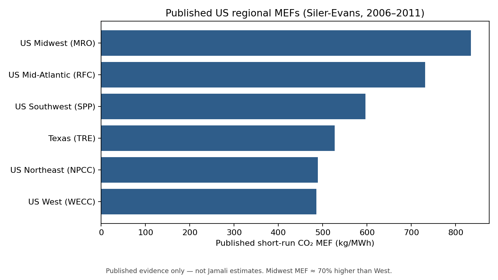
| Region | Published CO₂ MEF (kg/MWh) | Dominant marginal fuel | AEF vs MEF (2007 CO₂) |
|---|---|---|---|
| MRO (Midwest) | 834 | Coal (~79%) | AEF ≈ MEF |
| RFC (Mid-Atlantic) | 731 | Coal (~70%) | AEF ~11% below MEF |
| SPP (Southwest) | 596 | Gas (~65%) | AEF 35% above MEF |
| TRE (Texas) | 527 | Gas (~84%) | AEF 12% above MEF |
| NPCC (Northeast) | 489 | Gas (~81%) | AEF 25% below MEF |
| WECC (West) | 486 | Gas (~86%) | AEF ≈ MEF for CO₂ |
What this implies for Indonesia — and what it does not. The common pattern across these systems is that short-run MEFs (i) vary by region and often by time of day or season, and (ii) can differ materially from average intensity. That is why the capacity to estimate a local MEF matters for Jamali: foreign MEF numbers cannot be borrowed, and an annual average or CM factor is a different quantity. It does not prove that Indonesia must replace CM, and it does not transfer any U.S. MEF value to Jamali. The similarity that matters is methodological: where interval operating data exist, MEF estimation is feasible and can test whether simplified accounting factors are close to observed responses.
Official publications provide useful annual electricity balances, fuel consumption and fuel prices. Their coverage is not always identical: some tables include isolated systems or electricity imported from outside Jamali, so differences must be reconciled before combining data (PLN, 2025a, 2025b). The RUPTL planning information is useful, but the audited inputs do not support a defensible numerical long-run estimate: fleet characteristics, operating profiles, economic assumptions and grid boundaries still need reconciliation.
A first source-backed register was compiled from the provincial annexes of PLN's RUPTL 2025–2034 and official PLN Nusantara Power statistics. It records 43 named existing-resource entries, 294 planning rows and 25 isolated East Java systems. The existing entries include plants, generating complexes and a reporting portfolio; they are not yet a complete list of operating units.
Planning rows include named projects, capacity quotas, storage, replacements, relocations and efficiency improvements, so they cannot all be counted as new capacity. After separating footnoted replacements, relocations and efficiency additions, the extracted rows reproduce the provincial scenario totals with differences below 1 MW. This establishes arithmetic consistency, not that every project is connected or operating (PLN, 2025a, Annex B).
Electricity transferred between Java and Bali stays inside the whole-Jamali boundary, whereas imports from Sumatera cross it. Isolated systems are treated separately unless a connection is established. Plant names, reporting organisations and provincial locations alone do not determine electrical membership.
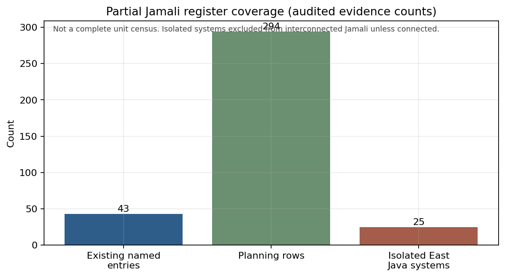
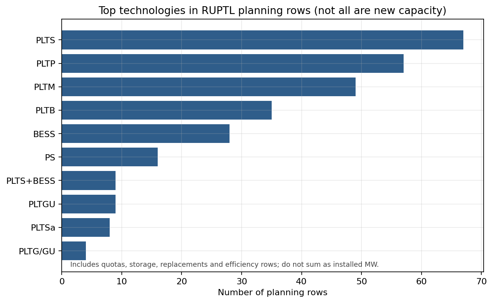
PLN Indonesia Power's official 2024 statistics provided 142 plant/group records and 476 nonblank machine-capacity cells. These are not equivalent to verified operating units: the published row-level machine counts sum to 475, with an unresolved inconsistency at Grati. The report distinguishes owned capacity from resources operated under operation-and-maintenance (O&M) contracts (PLN Indonesia Power, n.d., Tables 9–13).
Several overlaps are now reconciled. Suralaya units 1–7 and the separately reported Suralaya 8 reproduce the RUPTL combined grouping. Priok's total includes Senayan; Lontar's includes both owned and O&M capacity. Adding these parent totals to their constituents would double-count capacity. The Kamojang, Semarang and Bali portfolios show why a reporting organisation cannot define the interconnected Jamali boundary.
A follow-up audit reconciled overlapping generator names using ESDM's national vital-object register dated 28 November 2024, operator information and official historical releases. Jawa 4 is Tanjung Jati B units 5–6, distinct from original units 1–4. At Cilacap, the original units 1–2, Expansion I and Expansion II are separate groups; Jawa 8 is Expansion II, the operator's Unit 3A. Batang/Jawa Tengah PPP belongs to Bhimasena Power Indonesia and is distinct from Bhumi Jati Power's Jawa 4. Six earlier register entries map to 12 descriptive unit labels across three sites (ESDM, 2017, 2020, 2024; Sumber Segara Primadaya, n.d.; Bhimasena Power Indonesia, 2023).
Different published MW figures are not equivalent. PLN Statistics 2024 reports 2,811.40 MW installed and 2,643.80 MW Daya Mampu (dependable) for the original Tanjung Jati B group, while other sources give nominal or project capacities for the same groups. ESDM reports Jawa 8 as 1,000 MW, including 55 MW for plant use and 945 MW supplied to PLN. An investor's equity-equivalent MW is a financial attribution, not physical capacity. These observations are kept separate rather than averaged or combined (PLN, 2025b; ESDM, 2020; Kansai Electric, n.d.).
PLN Nusantara Power statistics provide selected annual installed and net dependable capacities, availability indicators and net plant heat rates. Annual heat rates describe average conversion performance, not how fuel use changes as output changes, and some capacity values differ within the same publication (PLN Nusantara Power, n.d., Tables 1–2, 6 and 8). Documented time-profile samples include annual Jamali electricity sales, 42 months of output from two Wayang Windu units, and five daily examples with generation, steam and reported project steam emissions. Sales are not hourly demand, the daily examples are not continuous, and one geothermal plant does not reveal the grid's response.
A targeted search for openly downloadable Jamali operating data identified one candidate claiming operational and generation data for the interconnected system: the Jamali Power System Dataset v1.0.0 on Zenodo, 9 May 2026, CC BY 4.0 (Ikhsan, 2026). The archived release was downloaded and checksum-verified; it contains only a README, a licence notice and a software .gitignore, with no data records, and its linked GitHub repository was unavailable on 11 November 2026. It is incompatible with an MEF estimation sample. Other leads were future-scenario demand profiles, or half-hourly UIP2B load used in studies but not published. No openly accessible, time-aligned Jamali demand, generation and emissions or fuel package has been verified.
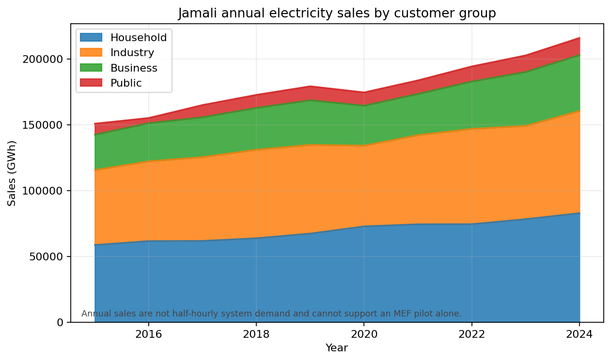
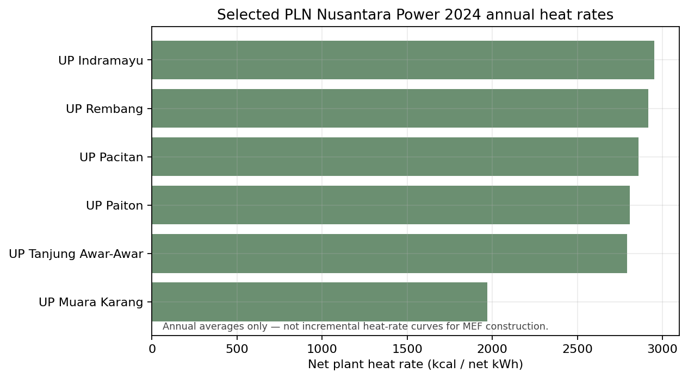
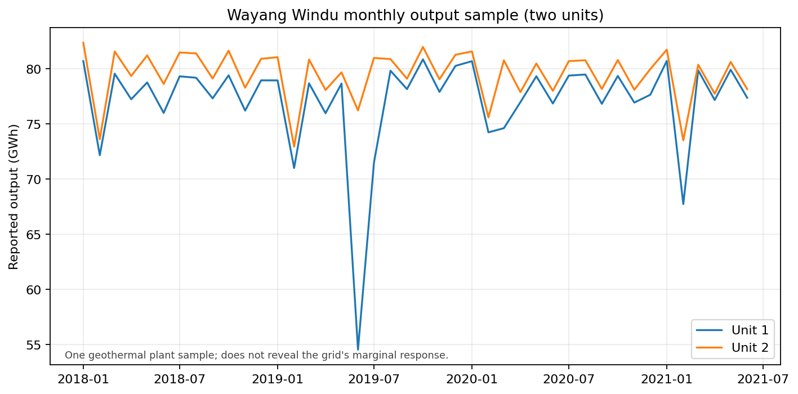
| Route | What existing evidence supports | Missing for a numerical pilot | Status |
|---|---|---|---|
| Historical regression (Siler-Evans type) | Method and estimand defined; boundary issues documented | Interval demand and fossil generation or emissions for the same timestamps; timezone and gross/net definitions | Blocked by one data request; lowest-input route |
| AVERT-style historical-hourly | Implementation reference reviewed | Unit-level hourly generation and heat input | Blocked; needs more than regression |
| Reduced-order dispatch | Partial unit register; annual heat rates and availability; fuel prices; identity crosswalks | Complete dated fleet with dependable capacity; heat-rate curves; contract constraints; interval data for calibration | Partially supplied |
| Network-resolved | Plant locations only | Topology, line limits, interval operation | Not ready |
| Machine-learning forecasting | Method and evaluation risks reviewed | A defensible emissions-response target (depends on the above) | Not ready |
| Long-run capacity expansion | RUPTL 2025–2034 balances, additions, retirements, scenarios | Model-ready fleet and cost package, time profiles, transfer limits, post-2034 policy | Not ready; separate programme |
| CM accounting benchmark (ESDM) | Published factors and regulatory context | — | Available, but not an observed MEF |
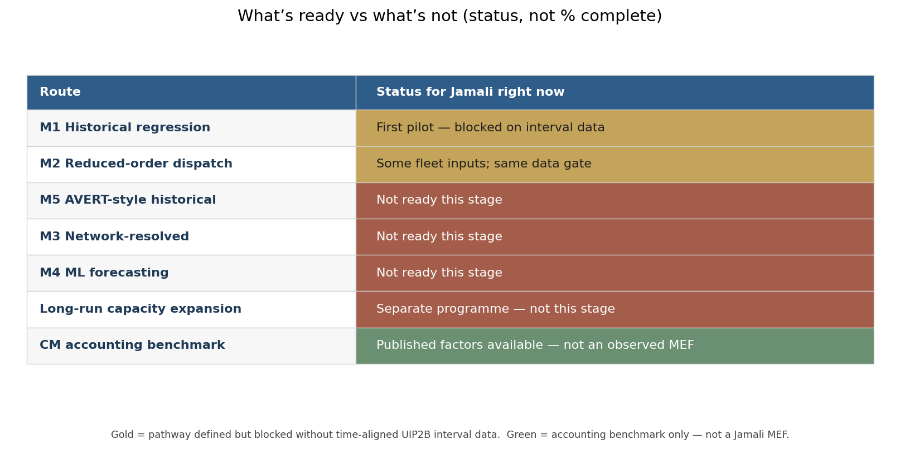
To avoid delay once interval data arrive, a historical-regression pilot scaffold has been implemented in mef_research/pilot_m1/. It defines the expected input schema, constructs interval changes in demand and CO₂, fits a chronological training/test regression, and estimates an hour-of-day MEF profile. Real UIP2B files can be mapped to the schema and run through the same script.
The scaffold is dry-run on a synthetic toy grid that is deliberately not Jamali. The toy world places coal on the margin at night and gas on the margin at the evening peak, so the code can be checked against a known pattern. Rebuild with generate_toy_data.py and run_pilot.py.
Important. Toy pilot outputs are illustrative software checks only. They are not Jamali MEFs, not Indonesian evidence, and must not be copied into findings as estimated factors for the Jamali grid. No numerical Jamali MEF is supported until verified UIP2B interval data are obtained and reviewed.
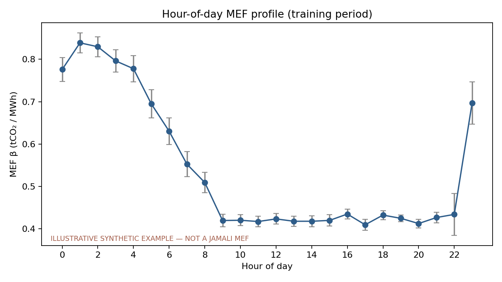
The same scaffold was also dry-run on public U.S. EIA Form EIA-930 hourly data for January–June 2024. Four balancing authorities are compared: CISO (CAISO area), ERCO (ERCOT), and two coal-heavier systems, MISO and PJM. Demand and fuel-specific generation are reported; CO₂ is constructed here from generation × constant fuel intensities, so the results are a method demonstration rather than an official EIA emissions product. Chronological training uses the first 75% of hours.
Public demo only. These values are not Jamali MEFs, not Indonesian evidence, and not official U.S. policy factors. They show that the M1 pipeline runs on real public interval data and that method and system choices change the answer.
1. AEF versus demand-based MEF. Average emission factors (total constructed CO₂ ÷ total demand) are compared with the regression MEF (ΔCO₂ on Δdemand). In this demo, AEF is about 23–40% below the demand MEF for CISO, ERCO and MISO, while PJM’s AEF and demand MEF are nearly equal. This mirrors the published finding that averages need not match marginal responses (Siler-Evans, 2012, Table 2.2).
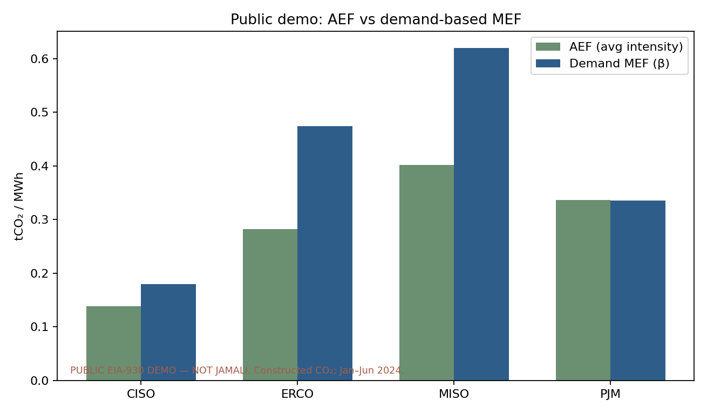
2. Demand MEF versus fossil-generation MEF. Replacing Δdemand with Δ fossil generation (coal + gas + oil), as in Siler-Evans-style regressions, raises the estimated β and substantially improves fit (fossil-generation R² ≈ 0.95–0.97 versus demand R² ≈ 0.28–0.70). The estimand therefore matters: a total-demand MEF and a fossil-generation response are related but not identical quantities.
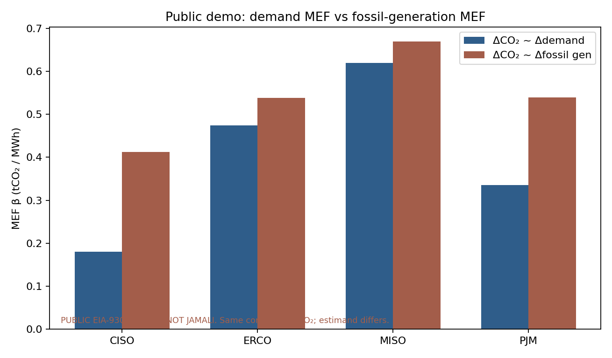
3. Multi-region comparison. Under the same method and fuel factors, demand MEFs rank roughly with coal exposure in this sample: MISO ≈ 0.62 tCO₂/MWh (highest coal share of fossil output), ERCO ≈ 0.47, PJM ≈ 0.34, CISO ≈ 0.18 (no coal generation in the constructed series). Hour-of-day profiles also differ by BA.
| BA | AEF | Demand MEF | Fossil MEF | AEF vs demand MEF | Coal share of fossil | Demand R² | Fossil R² |
|---|---|---|---|---|---|---|---|
| CISO | 0.14 | 0.18 | 0.41 | AEF 23% below | 0% | 0.31 | 0.97 |
| ERCO | 0.28 | 0.47 | 0.54 | AEF 40% below | 21% | 0.28 | 0.97 |
| MISO | 0.40 | 0.62 | 0.67 | AEF 35% below | 40% | 0.70 | 0.96 |
| PJM | 0.34 | 0.34 | 0.54 | ≈ equal | 25% | 0.34 | 0.95 |
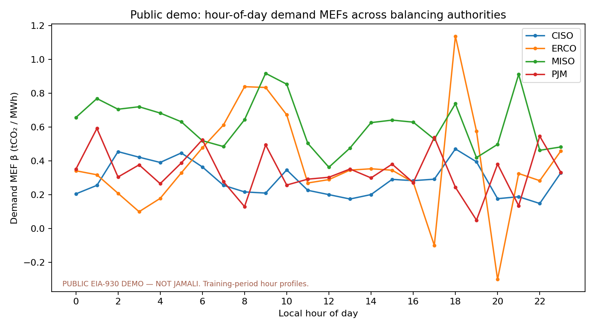
Together with the published Siler-Evans panel, the practical conclusion for Indonesia is unchanged but stronger: MEF results are system-specific; the choice of estimand (demand versus fossil generation; average versus marginal) changes the number; interval operating data make estimation possible; and Jamali still lacks a verified public package of that type. The scaffold is ready for mapped UIP2B inputs when authorised data arrive.
Data-gap simulation. The same public EIA series were deliberately coarsened from hourly to daily and monthly aggregates. Demand-MEF estimates change under aggregation, and a single annual total cannot support a change-on-change regression at all. This is a direct demonstration of why Jamali annual sales or annual heat rates cannot substitute for UIP2B interval data.
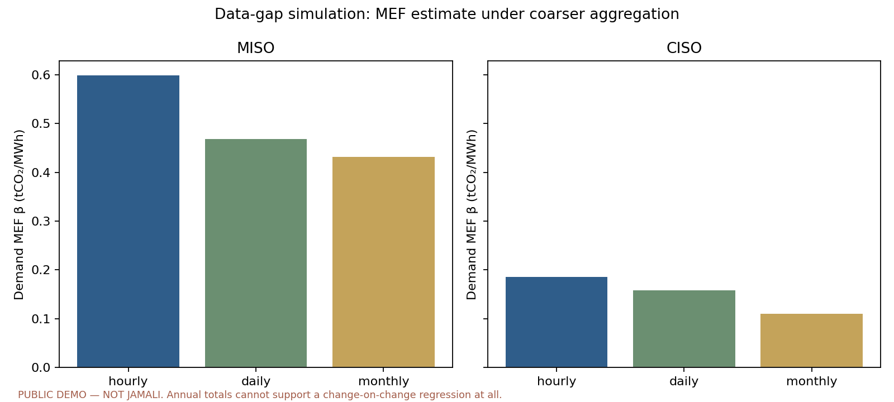
Toy with/without geothermal. In the synthetic toy grid, adding 500 MW of must-run geothermal displaces a mix of coal (more at night) and gas (more at peak). The implied avoided intensity in that toy world is about 0.64 tCO₂ per extra geothermal MWh. This is a teaching counterfactual only, not a Jamali project assessment.
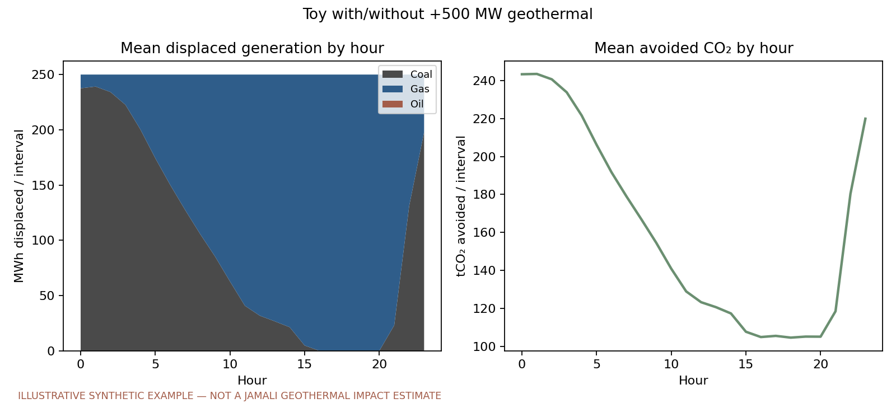
Stylised Jamali merit-order cartoon. Using audited NP annual heat rates and assumed fuel prices (not verified PLN contracts), a simplified stack places geothermal as must-run, coal next and gas last. In this cartoon, night demand leaves coal on the margin (~1.0 tCO₂/MWh proxy) while peak demand pushes onto gas (~0.42). This is an illustration of dispatch logic using Indonesian plant evidence, not a calibrated or numerical Jamali MEF.
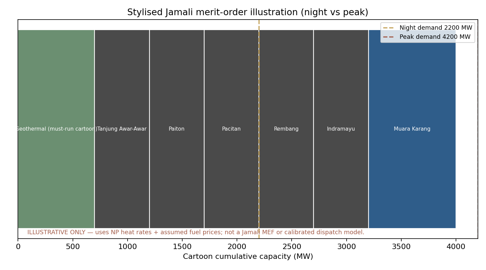
An MEF and the CM answer related but different questions. A short-run MEF describes how existing plants respond to a small change; the CM's operating margin approximates this with a simplified rule, and its build margin approximates effects on future capacity. In carbon-crediting workflows, CM is often the published accounting factor used to quantify displaced grid emissions. A credible Jamali MEF study could therefore test whether the operating margin is a reasonable approximation of observed short-run responses, and a long-run with/without-geothermal comparison could test the build-margin assumption. A with/without comparison estimates a finite project effect for stated assumptions; it is not automatically equal to a local marginal factor. Until such evidence exists, the CM remains the available accounting benchmark, and no claim that MEFs should replace it is supported.
Obtaining data and fitting a model is not enough to prefer an MEF over CM. The repository protocol (mef_research/CREDIBILITY_PROTOCOL.md) requires: (1) a written estimand (perturbation, boundary, horizon, units) before fitting; (2) separate checks of observable fit and of marginal-response credibility — MEF must not be scored against CM as physical truth; (3) triangulation where feasible (primary historical regression plus a second method on the same estimand) with uncertainty; (4) only then a comparison of the MEF–CM gap for policy implication. Possible outcomes include informing assessment, reporting both, improving data access, or discussing rules; replacement of CM for credit issuance is a governance question, not an automatic scientific result. Credit eligibility and issuance remain out of scope for this readiness stage.
mef_research/pilot_m1/ can be pointed at mapped UIP2B inputs; replace the toy data path and keep toy outputs out of Jamali results.Literature and data searches were bounded, not exhaustive; their results are not evidence of total public-data absence. Some sources were assessed through supporting information or code rather than full articles. Manual transcriptions of scanned documents were visually checked but not independently verified. No institutional contact occurred and no Jamali MEF was estimated. Audit figures summarise existing evidence only. The M1 pilot scaffold was dry-run on synthetic data and on public U.S. EIA-930 series with constructed CO₂; those outputs are method demonstrations, not Jamali results and not official U.S. MEF products. Cross-region literature values are cited from published tables and are not re-estimated here.
Bhimasena Power Indonesia. (2023, July 22). Supporting the reliability of Java–Bali electricity supply, PLN management visit Batang Power Plant. https://www.bhimasenapower.co.id/content/3136/
Deetjen, T. A., & Azevedo, I. L. (2019). Reduced-order dispatch model for simulating marginal emissions factors for the United States power sector. Environmental Science & Technology, 53(17), 10506–10513. https://doi.org/10.1021/acs.est.9b02500 (and Supporting Information).
ESDM. (2017, August 31). Fact sheet ground breaking proyek PLTU Jawa 4 Jepara, Jawa Tengah. Kementerian Energi dan Sumber Daya Mineral.
ESDM. (2020, February 17). Pakai teknologi USC, PLTU Jawa 8 berpotensi hemat Rp 1 triliun (Siaran Pers 073.Pers/04/SJI/2020).
ESDM. (2024, November 28). Keputusan Menteri ESDM No. 310.K/BN.05/MEM.S/2024 (national vital-object designation). https://jdih.esdm.go.id/common/dokumen-external/2024kmesdm310k.pdf
Fuentes Valenzuela, L., Degleris, A., El Gamal, A., Pavone, M., & Rajagopal, R. (2024). Dynamic locational marginal emissions via implicit differentiation. IEEE Transactions on Power Systems, 39(1), 1138–1147.
Gagnon, P., & Cole, W. (2022). Planning for the evolution of the electric grid with a long-run marginal emission rate. iScience, 25(3), 103915. https://doi.org/10.1016/j.isci.2022.103915
Ikhsan, R. R. N. (2026). Jamali Power System Dataset (v1.0.0) [Data set]. Zenodo. https://doi.org/10.5281/zenodo.20098065
Kansai Electric Power Co. (n.d.). Tanjung Jati B coal-fired power station units 5 and 6. Retrieved 11 November 2026.
Mayes, S., Klein, N., & Sanders, K. T. (2024). Using neural networks to forecast marginal emissions factors: A CAISO case study. Journal of Cleaner Production, 434, 139895. https://doi.org/10.1016/j.jclepro.2023.139895
PT PLN (Persero). (2025a). Rencana Usaha Penyediaan Tenaga Listrik (RUPTL) 2025–2034. Kepmen ESDM No. 188.K/TL.03/MEM.L/2025.
PT PLN (Persero). (2025b). Statistik PLN 2024 / PLN Statistics 2024. https://www.pln.co.id/laporan-statistik-id
PT PLN Indonesia Power. (n.d.). Laporan Statistik 2024 / 2024 Statistic Report. Retrieved 11 November 2026.
PT PLN Nusantara Power. (n.d.). Statistik Perusahaan 2020–2024 / Corporate Statistics 2020–2024. Retrieved 11 November 2026.
S3researchUSC. (n.d.). MEF-Regression [Source code and notebooks]. https://github.com/S3researchUSC/MEF-Regression
Siler-Evans, K. (2012). Evaluating interventions in the U.S. electricity system [Doctoral dissertation, Carnegie Mellon University], Chapter 2.
Siler-Evans, K., Azevedo, I. L., & Morgan, M. G. (2012). Marginal emissions factors for the U.S. electricity system. Environmental Science & Technology, 46(9), 4742–4748. https://doi.org/10.1021/es300145v
Sumber Segara Primadaya. (n.d.). Profile. https://www.ssprimadaya.co.id/en/about/profile. Retrieved 11 November 2026.
UNFCCC. (2018). TOOL07: Tool to calculate the emission factor for an electricity system (Version 07.0).
U.S. Environmental Protection Agency. (2024). AVERT user manual (Version 4.3).